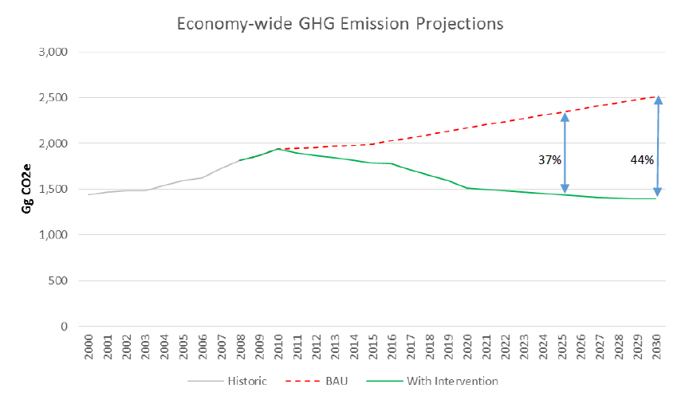

As a small island developing state (SIDS) that is extremely vulnerable to the adverse impacts of climate change and cognizant of the implications for its economic, social and environmental sectors, the Government of Barbados (GOB) ratified the United Nations Framework Convention on Climate Change (UNFCCC) in 1994 and the Kyoto Protocol in 2000. Since then, Barbados has actively participated in the Conference of Parties (COP) and related inter-sessional meetings of the UNFCCC, as well as undertaken a variety of measures that fit with the overarching objective of the Convention and intended to build national resilience to the challenges imposed by climate change. Accordingly, with the recognition of the need for an urgent global response to address the adverse impacts of climate change, the GOB is expecting the agreed and adopted outcome of the 21st COP of the UNFCCC to be an internationally legally-binding agreement under the Convention that is in the form of a protocol and is applicable to all Parties.
Barbados possesses many of the inherent economic, social and environmental vulnerabilities that are associated with Small Island Developing States (SIDS). Among others, these include susceptibility to natural disasters and extreme events; a small population; limited land and natural resource base; and a small open economy. These will be exacerbated by the impacts of climate change and, if left unchecked, undermine the sustainable development gains that have been achieved over the course of the country’s history.
Barbados is experiencing more extreme weather events, as well as more subtle changes to temperature and precipitation patterns. Observations confirm that temperatures are rising, the frequency of extreme weather events are increasing, sea levels are rising and coral bleaching events are more frequent. These observations are consistent with climate change projections for the Caribbean region [1].
The GOB has drafted a National Climate Change Policy Framework (NCCPF), which provides the country’s overarching approach to adaptation and mitigation and is in line with the Barbados Sustainable Development Policy (2004). The NCCPF is monitored by the National Climate Change Committee (NCCC).
The Barbados Sustainable Development Policy’s overarching goal is stated as
to ensure the optimisation of the quality of life for every person by ensuring that economic growth and development does not occur to the detriment of our ecological capital.
Deriving from this, the primary goal of the NCCPF is to “establish a national process for adapting to climate change effects and minimising greenhouse gas emissions over the short, medium and long term, and to do this in a manner that is coordinated and consistent with the broader sustainable development aspiration.” Its associated objectives are to:
The NCCPF is monitored by a National Climate Change Committee that is comprised of representatives of government ministries, non-governmental organizations, and private sector agencies.
Despite its limited financial resources and negligible contribution to greenhouse gas (GHG) emissions on a global scale, Barbados is taking a proactive and ambitious approach to reducing its own emissions by introducing concrete mitigation actions that will see the decarbonisation of its electricity grid, initiatives to improve energy efficiency and reduced emissions from its other sectors. The country’s Green Economy Scoping Study [2], national Sustainable Energy Framework (SEF) [3] and proposed Nationally Appropriate Mitigation Action (NAMA) [4] for the energy sector, form the backbone of this Intended Nationally Determined Contribution (INDC). Inevitably, as a SIDS, while Barbados can show leadership and intention, a portion of its ambitious contribution to reduce GHG emissions will be dependent on technology transfer and financial support from the international community in order to realise its objectives.
As a minimal contributor to global GHG emissions, Barbados places prominence on adapting to the effects of climate change. The changing conditions will see a noticeable impact on the limited availability of fresh water, agricultural productivity, increased land degradation and reduced fish stocks caused by the migration of fish to cooler waters beyond the Caribbean region. The combination of reducing precipitation and salt water intrusion from sea level rise will compound the issue of insufficient water availability (through salinization of ground water aquifers), further affecting the productivity of both agriculture and fisheries. Barbados will face indirect climate-related impacts including drought, flooding, and storms (physical damage), increased pest outbreaks, the spread of invasive species, the increased probability for the occurrence of vector borne and heat related illnesses and the destruction of key ecosystems which all threaten national productivity and may undermine the potential for real growth. With the majority of Barbados’ population and its economic activities located within its narrow coastal zone, this area is undeniably one of the island’s most valuable economic and social assets. Sea level rise, storm surges and inundation, in addition to the increased frequency in tropical storms, will present direct challenges to the coastal zone, in particular to the tourism sector in terms of potential loss and damage to key infrastructure.
Barbados’ national adaptation response is consistent with existing national level policy, in particular the Medium Term Growth & Development Strategy - 2013 - 2020 [5] and the Barbados Sustainable Development Policy. Adaptation planning is also aligned to the CARICOM Regional Framework for Achieving Development Resilient to Climate Change and its associated Implementation Plan 2011 - 2021.
Taking a mainstreaming approach to climate change, the GOB has started to incorporate climate change adaptation into the following national plans and strategies:
The sectors identified as most vulnerable to climate change are agriculture, fisheries, tourism, water, human health, coastal resources and human settlements [6]. Climate change will also impact vulnerable groups disproportionately, including youth and gender in Barbados’ national development perspectives, which are cross-cutting concerns planning [7].
Barbados intends to achieve an economy-wide reduction in GHG emissions of 44% compared to its business as usual (BAU) scenario by 2030. In absolute terms, this translates to a reduction of 23% compared with the baseline year, 2008.
As an interim target, the intention will be to achieve an economy-wide reduction of 37% compared to its business as usual (BAU) scenario by 2025, equivalent to an absolute reduction of 21% compared to 2008.
The above emission reduction contributions will be achieved through the mitigation actions in the energy and waste sectors, which accounted for the vast majority (88%)[8] of GHG emissions in Barbados in 2008.
Figure 1: Projected BAU and ‘With Intervention’ GHG emission scenarios for Barbados

Energy consumption accounted for 72% of Barbados’ GHG emissions in 2008 [8] and is therefore the focus of its mitigation activity. Within the sector 67% arises from energy generation and 33% from transport. The following sub-sector contributions have been identified:
i. Renewable energy: contributing 65% of total peak electrical demand by 2030 [9]. The country has made huge strides in this regard; for example distributed solar photovoltaic (PV) installation is growing exponentially and this trend is expected to continue. Other planned measures include waste-to-energy and biomass generation plants, wind, distributed and centralized solar PV and capture and use of landfill gas for energy generation.
ii. Electrical energy efficiency: a 22% reduction in electricity consumption compared to a BAU [10] scenario in 2029. Planned measures in this sector include the ‘Public Sector Energy Efficiency and Conservation Programme’, implementation of applicable recommendations through the Caribbean Hotel Energy Efficiency and Renewable Energy Action-Advanced Program (CHENACT), energy efficiency measures in homes and various LED lighting initiatives.
iii. Non-electrical energy efficiency: a 29% reduction in non-electric energy consumption including transport, compared to a BAU scenario in 2029 [10]. GOB is investing in alternative vehicles and fuels such as compressed natural gas, liquid petroleum gas, ethanol, natural gas, hybrid and electric and encouraging their adoption through tax incentives.
Aside from the energy sector, emissions from waste represent the other main contributor to national GHG emissions (16% in 2008). Projects to divert waste from landfill and to develop waste-to-energy plants are underway to deliver savings in this sector.
| Parameter | Information | |
|---|---|---|
| Timeframe and/or period for implementation | 2030 (with an interim target in 2025) | |
| Type of commitment | Absolute economy-wide emission reduction contribution (against BAU and base year) | |
| Reference point or base year | 2008 base year (1,820 Gg CO2e) | |
| Estimated quantified impact on GHG emissions | i. Intention to reduce GHG emissions by 44% below BAU levels by 2030 (23% below 2008 levels) ii. Intention to reduce GHG emissions by 37% below BAU levels by 2025 [11] (21% below 2008 levels) |
|
| Business as usual methodology | The following assumptions have been made to generate the BAU scenario:
|
|
| Coverage | % national emissions | 100%[15] |
| Sectors [16] |
|
|
| Gases [17] |
|
|
| Geographical boundaries | Whole country | |
| Intention to use market-based mechanisms to meet contribution |
|
|
| Metrics and methodology | Consistent with methodologies used in Barbados’ forthcoming Second National Communication (2006 IPCC Guidelines). | |
Despite its negligible contribution to global GHG emissions (approximately 0.004%) and its SIDS status, Barbados is taking significant and ambitious steps to reduce its national emissions. All of the country’s identified mitigation actions are being targeted by the INDC, which will result in per capita emissions of 4.8 tonnes CO2e in 2030 (compared to 6.6 tonnes CO2e in 2008), consistent with the projected global average emissions per capita in 2030 required to meet the 1.5°C above pre-industrial levels target [18]. This projection clearly demonstrates that despite Barbados’ SIDS status, its ambition to reduce emissions is significant and reflects a fair contribution in the global context.
Barbados has set up the NCCC, coordinated by the Ministry of Environment and Drainage (MED), that reports on the development and implementation of all specific activities and programmes that are seeking to address climate change mitigation and adaptation. The NCCC represents the diversity of stakeholders engaged in Barbados’ national climate change response, including relevant ministries, NGOs and private sector bodies. It is intended that the NCCC will also monitor the implementation and directives of the draft NCCPF, once formally approved. The NCCC currently meets to report progress on sectoral activities on a quarterly basis each year. Collectively, the representatives of the NCCC keeps the policy under regular review; monitors the implementation its directives; and presents annual reports to the Cabinet on measures that have been undertaken to implement this policy. The MED has coordinative oversight of the NCCC and the implementation of the NCCPF. Barbados has a number of ongoing programmes that are addressing adaptation as a central theme within these key sectors:
Barbados has formalised its commitment to the mitigation activities summarised above through the planning and implementation of various mitigation actions and other initiatives to reduce GHG emissions and green its economy, which include inter alia:
To accompany all of these actions, GOB is also taking steps to put systems and processes in place to institutionalise a formal monitoring, reporting and verification (MRV) system to track national emissions and the impact of specific mitigation actions. As the national focal point the MED will coordinate other related ministries and stakeholders in the preparation of required reports for monitoring progress, implementation and reporting to the UNFCCC or otherwise as may be required.
Climate change is a cross-cutting issue that affects every part of the Barbadian economy, social structure and its’ natural environment. In line with its national commitments it is crucial that Barbados continues to build on and strengthen its ambition to achieve the principles behind its sustainable develop policy, in addition to ensuring a low-carbon climate resilient society. In doing so, Barbados looks to regional and international cooperation for support in order to progress the mitigation and adaptation priorities set out in its INDC, that are in line with its national development objectives.
Barbados requires substantial assistance to meet its adaptation objectives set out in its INDC. As a highly vulnerable SIDS, Barbados is already experiencing frequent and major climate change impacts and extreme weather events that could decimate its economy in one extreme (climate related) event. Such impacts will be an ever present threat for the country and will continue to challenge the development of the Barbadian economy as a whole.
As a SIDS, Barbados will require significant financial, technology transfer and capacity-building support to deliver the intended contribution and related infrastructure. International grant and loan financing mechanisms such as the existing ‘Energy Smart Fund’[20] will be imperative to provide financial and technical support to renewable energy and energy efficiency projects in Barbados. Initial analysis suggests that a number of the planned renewable energy projects (linked to mitigation in the waste sector) in particular, provide a strong economic argument to stimulate private sector investment; however enabling and technology transfer support will still be required. Mitigation actions in the energy efficiency and transport sectors will be largely dependent on international capital financing to implement and to achieve the relative contributions.
Specifically international support will be crucial to the implementation of actions set out in its NCCPF (once formally approved), in addition to its SEF, NAMA and other sectoral policies and plans. The flexibility offered by the existing (i.e. CDM) and future emission reduction mechanisms under the UNFCCC will be used where possible to achieve Barbados’ contribution domestically or jointly with regional/international partners.
Climate Change Risk Profile for Barbados (CARIBSAVE 2012) ↩
http://www.unep.org/greeneconomy/Partnerships/NewScopingStudyinBarbados/tabid/79634/Default.aspx ↩
http://www.energy.gov.bb/web/national-sustainable-energy-policy ↩
NAMA for renewable energy and energy efficiency in Barbados. The NAMA is currently in draft form and is expected to be published shortly. ↩
Identified through vulnerability assessments Initiated for the First National Communication to the UNFCCC (2001); revised and updated for key sectors included in the Second National Communication (forthcoming in 2015); also an independent vulnerability and needs assessment on agriculture: A Vulnerability and Capacity Assessment of the Food Zone Of Barbados (2015), Caribbean Community Climate Change Centre & Ministry of Agriculture, Food, Fisheries and Water Resource Management, Government of Barbados. ↩
Gender and youth play a central role in the draft National Climate Change Policy Framework. ↩
Barbados 2010 Greenhouse Gas Inventory. This forms part of the Second National Communication Report, which will be submitted to the UNFCCC shortly. 2008 has been chosen as the base year, so that measures in the waste sector that were implemented in 2009 can be excluded from the BAU projection. ↩ ↩
Honourable Darcy Boyce from the Ministry of Finance, Economic Affairs and Energy, speaking at an INDC workshop meeting in September 2015. ↩
BAU projections take into account the expected growth in the future in each sector taking into account current mitigation activities. As identified in footnote (8), 2008 has been chosen as the base year. ↩ ↩
This reflects the preference of the CARICOM Heads of Government for “five (5) year mitigation commitment cycles, with robust ex ante and ex post review and upward adjustment processes” as defined in the 2015 Declaration on Climate Change developed at the 36th Regular Meeting of the Conference of the Heads of Government of the Caribbean Community (CARICOM), 2-4 July 2015, Bridgetown Barbados. ↩
Personal communication with Barbados Light & Power on the 17th September 2015. ↩
Historical and projected GDP data provided by the Central bank of Barbados on the 17th September 2015. ↩
BAU scenarios for an INDC can be “fixed” or “dynamic”. In this case, a fixed BAU will be used. ↩
Excludes international shipping and aviation and is consistent with IPCC good practice. ↩
Potential emissions reductions from Industrial Process and Product Use, Agriculture and Land Use, Land Use Change and Forestry were not considered, although these sectors are included in the baseline inventory and therefore the ‘economy wide’ savings. ↩
Note: PFCs have not been estimated in the 2010 GHG inventory for Barbados. Barbados is committed to the provisions of the Montreal Protocol. HCFCs are scheduled for global phase out by 2030 and Barbados is already on a phase-out schedule with a 35% reduction forecasted by 2020. HFCs are on the rise nationally and globally but Barbados is committed to the transition to natural refrigerants with no-Ozone Depleting Potential (ODP), and little or no-ODP. This aspect has not been included in the GHG mitigation scenarios that have been undertaken for this INDC. ↩
The global target to avoid 1.5°C of warming is 4.8 tCO2e per capita in 2030, assuming a global population of 8.2 billion (http://www.un.org/esa/population/publications/WUP2005/2005WUP_FS4.pdf)" and global emissions of 39 GtCO2e (http://climateanalytics.org/files/ca_briefing_benchmark_emissions_1p5_and_2oc_2020_2025_2030_20150210_final_bh_may.pdf). ↩
‘Building capacity and Regional Integration for the Development of a Generation of Entrepreneurs’ ↩
Loan provided by the Inter-American Development Bank ↩